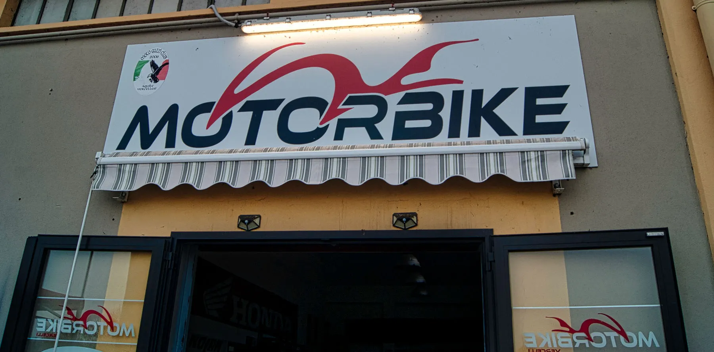
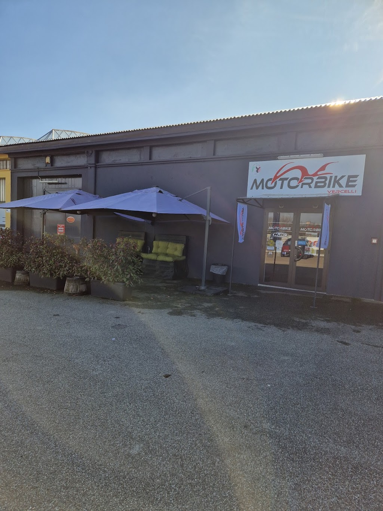

Ci vediamo
in Via Trino.
Hai un prodotto in mente, una moto da cercare o un intervento da concordare? Il primo passo è parlarne.

Fai un salto da noi.
Controlla gli orari0161 294987motorbikevercelli@gmail.comVia Trino 200
13100 Vercelli (VC)Ottieni indicazioni
13100 Vercelli (VC)Ottieni indicazioni
Orari di apertura
Lunedì15:30 – 19:30
Martedì09:00 – 12:00 / 15:30 – 19:30
Mercoledì09:00 – 12:00 / 15:30 – 19:30
Giovedì09:00 – 12:00 / 15:30 – 19:30
Venerdì09:00 – 12:00 / 15:30 – 19:30
Sabato09:00 – 12:00 / 15:30 – 19:30
DomenicaChiuso
Per festività o variazioni, chiama prima di partire.
Riconosci l’ingresso.

Motorbike Vercelli
Via Trino 200, Vercelli
La mappa viene caricata da Google solo quando la attivi.
Parliamone.
Un messaggio è un buon inizio.
Per un prodotto indica modello e taglia; per una moto raccontaci cosa cerchi.
Per la manutenzione, trovi un modulo dedicato nella pagina officina.
Parla con l’officina